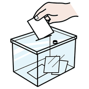
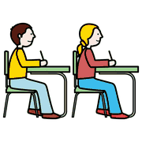
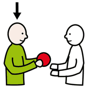

Modulo 4, ambienti e strumenti
Didattica digitale e Classroom
Lezioni in diretta o in tempi diversi, e come organizzare una classe virtuale con Google Workspace.
attività
Qual è la più funzionale?
 scegliere
scegliere
votare pensare
pensareVotiamo con un sondaggio: sincrona o asincrona?
Questo percorso di ricerca lungo cinquant'anni ha messo in luce che nessuna tecnica di insegnamento di per sé garantisce l'apprendimento.prof. L. d'Alonzo, lezioni di pedagogia speciale
Google Classroom

classe computer
computer insegnante
insegnante compiti
compiti- Creare corsi con gruppi di studenti diversi.
- Comunicare nella classe virtuale: domande e commenti sul lavoro degli studenti.
- Consegnare materiali di ogni tipo.
- Assegnare e raccogliere compiti, vedere chi ha consegnato e dare un riscontro subito.
- Tenere tutto in ordine: cartelle automatiche per studente e per compito, oppure organizzazione per argomenti.
la funzione
più utile
per il sostegno
Classroom in pratica

consegnarecompiti correggere
correggere calendario
calendario| Per… | Si può… |
|---|---|
| Gestire la classe | aggiungere studenti, gestire più corsi, collaborare con i colleghi |
| Assegnare compiti | usare materiali diversi, personalizzare i compiti, programmarli in anticipo |
| Organizzare | tenere le risorse in un unico posto, ritrovarle sempre e ovunque |
| Comunicare | aprire e moderare discussioni, fare verifiche e sondaggi veloci |
Per l'inclusione: un compito si può assegnare a un solo studente o a un piccolo gruppo. Si personalizza senza separare.